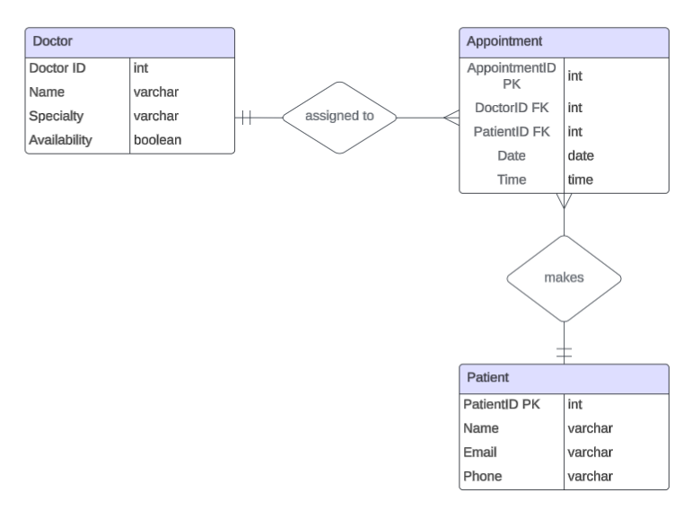

Debjani Sarma
Role: Data Visualization Lead
Contributions: Created all charts using Chart.js, built the logical data model, and supported the statistics page.
Naveen Pogiri
Role: UI/UX Designer
Contributions: Designed the homepage layout, including hero section, doctor cards, and smooth navigation. Helped structure the statistics page for visual consistency.
Sai Pratap Kodidasu
Role: Functionality & Navigation Developer
Contributions: Implemented CRUD operation pages, developed internal linking/navigation, and connected buttons to functional sections.
Sharmila Penumaka
Role: Content & UI Designer
Contributions: Created the About Us and Contact Us pages, wrote team bios, added logical data model and GitHub link, and styled both sections.
Logical Data Model
GitHub Repository
Explore our source code on GitHub:
GitHub